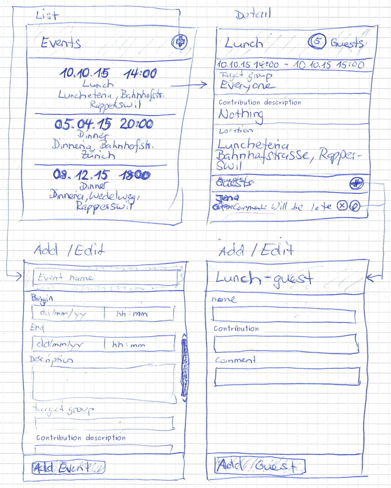
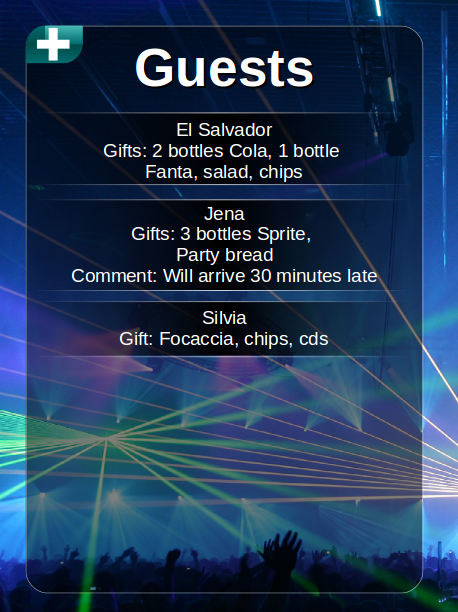

⇦
WED2 Miniprojekt: Angular - Aufgabenstellung (Testat)
Ziel
Ziel des Miniprojektes ist es, eine Applikation zur Verwaltung von Anlässen (Events) mit AngularJS zu erstellen, um die Vorlesungsinhalte zu vertiefen.
User-Stories
Die Event-Applikation soll die folgenden User-Stories abdecken:
- Als Veranstalter möchte ich eine Veranstaltung (Name, Beschreibung, Zielgruppe, Beitrag, Ort, Datum/Zeit, Kommentar) erfassen können, sodass Gäste sich über meine Veranstaltung informieren können.
- Als Veranstalter möchte ich die maximale Anzahl Gäste eines Anlasses beschränken können, damit sich nicht mehr Gäste anmelden, als meine Veranstaltung Platz bieten kann.
- Als Veranstalter möchte ich sehen können, wie viele Gäste sich für meine Veranstaltung angemeldet haben und was sie mitbringen, damit ich die Veranstaltung entsprechend vorbereiten kann.
- Als Gast möchte ich eine Übersicht über die aktuellen Veranstaltungen erhalten, um mich für eine interessante Veranstaltung anmelden zu können.
- Als Gast möchte ich mich für eine Veranstaltung anmelden können, um daran teilnehmen zu können und mitzuteilen, was ich mitbringen werde oder einen Kommentar zu hinterlassen.
- Als Gast möchte ich meine Anmeldung editieren können, um etwas anderes mitbringen zu können oder den Kommentar anzupassen.
- Als Gast möchte ich eine Anmeldung canceln können, sodas der Gastgeber sieht, wer sich wieder abgemeldet hat.
- Als Gast möchte ich sehen können, was andere Gäste mitbringen, um nicht das Gleiche mitzubringen.
Model
Event:
id [string]
name [string]
description [string]
targetGroup [string]
contributionsDescription [string]
location:
name [string]
street [string]
zipCode [string]
city [string]
times:
begin [Date]
end [Date]
maximalAmoutOfGuests [number]
guests [Guest[]]
\begin
\end
Guest:
id [string]
name [string]
contribution [string]
comment [string]
canceled [boolean=false]
Benutzeroberfläche
Sie sind in der Gestaltung der Benutzeroberfläche komplett frei, solange die andern Kriterien erfüllt sind und die Oberfläche Responsive ist.
Die folgenden Wireframes sollen Ihnen Inspirationen für einen möglichen Aufbau geben:

Erwartet wird nur ein minimales Styling ähnlich den Wireframes. Wenn Sie Zeit und Lust haben, dürfen sie sich jedoch auch austoben. Folgende Inspiration dazu, was man machen könnte:

REST-API
Zur Anbindung der Persistenz wird eine REST-Schnittstelle mit folgendem Interface verwendet: Event API (/api)
Node.js-Server
Zur Persistierung steht ein Node.js-Server mit einer REST-API zur Verfügung. Diesen benötigen Sie, sobald sie die Services/Repositories soweit implementiert haben, das Sie einen Server anbinden können.
Installation
- Zip entpacken
- In den Ordner wechseln (Ordner mit dem package.json-File).
- Auf der Kommandozeile
npm install ausführen.
- Zum Starten des Servers
npm start auf der Kommandozeile ausführen.
Testat Kriterien
Damit sie das Tastat erfolgreich abschliessen können, muss ihre Applikation die folgenden Kriterien erfüllen:
- Die Applikation funktioniert in Firefox und Chrome (FF 40+, GC 45+).
- Alle User-Stories wurden umgesetzt.
- Die Applikation ist als Client-Server Applikation aufgebaut. Die Client-Applikation basiert auf AngularJS/JavaScript.
- Die Applikation nutzt eine REST-Schnittstelle zum Datenaustausch mit dem Server (Persistenz). Ein Node.js-Server wird von uns vorgegeben, es ist jedoch auch erlaubt, eine eigene Implementation zu erstellen (beliebige Technologie), die die gleiche REST-Schnittstelle anbietet. Der von uns angebotene Node.js Server darf auch verändert/erweitert werden.
- Zur Kommunikation mit dem Server wird der AngularJS Ajax Service verwendet.
- Zur Verwaltung der Events und Gäste werden Services/Repositories eingesetzt.
- Die Applikation besteht aus mindestens vier verschiedenen Views. Mindestens zwei Views manipulieren Daten (Forms). Zur Navigation zwischen den Views wird die Routing Komponente von Angular eingesetzt.
- Die Benutzeroberfläche besitzt mindestens ein funktionales, minimales Styling. CSS-Frameworks wie Foundation oder Bootstrap dürfen verwendet werden (keine Bootstrap JS!).
- Responsive Design (360px*576px - 1920px*1080).
- Für Formulare wird, wo sinnvoll, HTML5-Formvalidierung + AngularJS Formvalidierung verwendet.
- Für mindestens folgende Aktionen/Komponenten existieren Jasmine-Tests mit gemockten Services:
- Test der Scope Variablen auf Korrektheit/Vollständigkeit im List-Controller mit mindestens 3 Datensätzen (Events).
- Create Event View: Test über erfolgreiches Anlegen eines Neuen Events
- Add Guest View: Test über erfolgreiches Hinzufügen eines Neuen Gastes
- Test jeder Repository-Methode/API-Calls mit gemocktem $httpBackend.
Zusätzliche Hinweise/Regeln
- Teamarbeit: Mindestens 2 Personen, höchstens 3 Personen. Alle Personen müssen sich zu gleichen Teilen am Projekt beteiligen.
- CSS Präprozessoren wie Less oder Sass sind erlaubt.
- JavaScript Precompiler wie TypeScript oder CoffeeScript sind erlaubt. Dart ist nur als Präprozessor erlaubt (nicht mit Dartium-Browser).
- RequireJS wird als Module-Loader verwendet.
- Nebst Angular sind keine andern Client-JavaScript-Frameworks/Libraries wie z.B. jQuery, ExtJS etc. erlaubt.
- Für Page-Layouts dürfen keine CSS Floats, display-inline-block oder Tabellen eingesetzt werden.
- Die Projektsource muss auf dem HSR Gitserver oder einem öffentlichen Gitserver wie GitHub oder GitBucket abgelegt werden und dem Übungsbetreuer muss Zugriff auf das Repository freigeschalten werden.
Abgabe
- KW 50
- Jedes Team erhält in der Übungsstunde eine Viertelstunde Zeit, um die Applikation den Übungsleitern zu zeigen. Ebenfalls gezeigt werden muss das Git-Log.
- Einschreibeliste: Siehe Link auf dem Skripteserver.